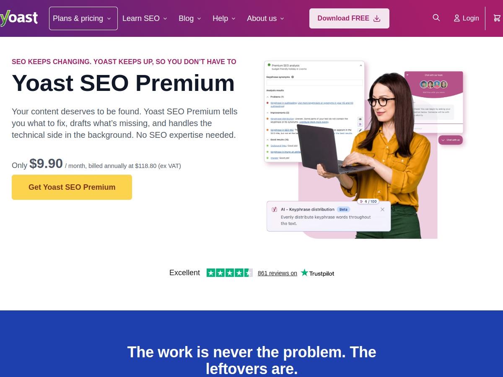

摘要
這則 Threads 貼文從兩部談 Marketing Agent 的 Podcast 出發，描述一個可以自動抓熱度、產生素材、上廣告平台、回收數據、解讀結果，再產生下一輪素材的行銷閉環。
作者真正感興趣的是產品機會：不要從零打造完整行銷平台，而是寄生在已經被大量網站使用的工具上。例如讀取 WordPress 後台中 Yoast SEO 提出的問題，再呼叫 Claude Code 修正內容、補充細節，最後以外掛或服務形式收費。
官方來源支持的部分
Yoast 官方產品頁將 Yoast SEO 定位為提供 SEO guidance、AI-assisted content optimization，以及告訴使用者需要修正什麼的工具。這支持貼文對「既有 SEO 外掛會提出內容與 SEO 建議」的基本描述。
Claude Code 官方文件則可作為貼文提及 Claude Code 的背景資料，但不能因此證明貼文構想中的 WordPress 外掛已經存在或能直接呼叫 Claude Code 完成全部修正。
這個產品構想的核心
貼文提出的價值鏈可以拆成：
- 從既有工具取得結構化問題或建議。
- 將問題轉成 Agent 可以執行的任務。
- 產生草稿、修改建議或程式碼變更。
- 讓人審核後寫回 WordPress 或其他行銷系統。
- 重新檢查 SEO、轉換率或廣告數據，形成下一輪任務。
真正的產品難點不只是呼叫模型，而是權限、審核、回滾、資料來源、品質評分與責任歸屬。
實作時的安全邊界
不應讓 Agent 直接擁有完整 WordPress 管理權限。較安全的做法是先讀取必要的 SEO 建議，輸出 diff 或草稿，再由使用者批准；若要自動寫回，至少要記錄每次變更、保留版本、支援回滾，並限制可修改的文章、欄位與外掛範圍。
如果流程還會接觸廣告平台，則需要額外限制預算、投放範圍、素材審核與個人資料使用。自動化閉環不代表可以省略人類審核。
資訊查核
本篇把「上千萬安裝數」、「Podcast 內容」、「寄生在既有外掛上的具體商業模式」標為無法確認、原文聲稱或產品構想。已由官方來源支持的只有 Yoast 的 SEO 建議與內容最佳化定位，以及 Claude Code 的官方文件背景。
來源證據
- Threads 原始貼文：
https://www.threads.com/@jardini/post/Db3e8eLmlpo - Yoast 官方產品頁：
https://yoast.com/wordpress/plugins/seo/ - 公開封面：
../assets/public/source-images/2026-08-10-threads-marketing-agent-yoast-cover.png
可見資訊
- 作者帳號：
jardini - 關聯主題：
Ai創業 - 頁面相對時間：
9 hours ago - 擷取時可見觀看數：5.3K views
- 擷取時可見互動數：68 likes、7 comments、9 reposts、43 shares
- 擷取時頁面顯示 Threads 登入提示。
參考資料
公開性說明
本篇使用 Yoast 官方公開產品頁截圖，不使用 Threads 作者頭像、留言者資料或登入畫面。